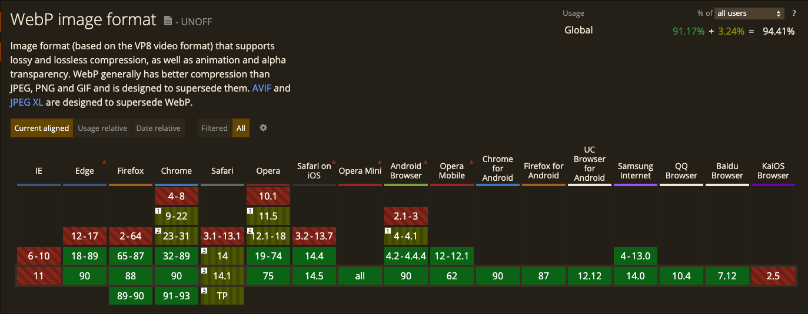
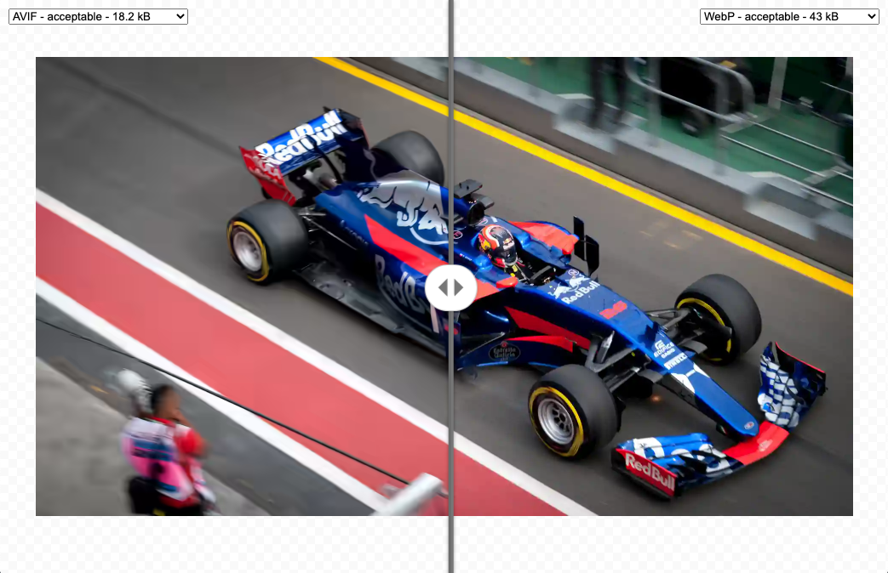
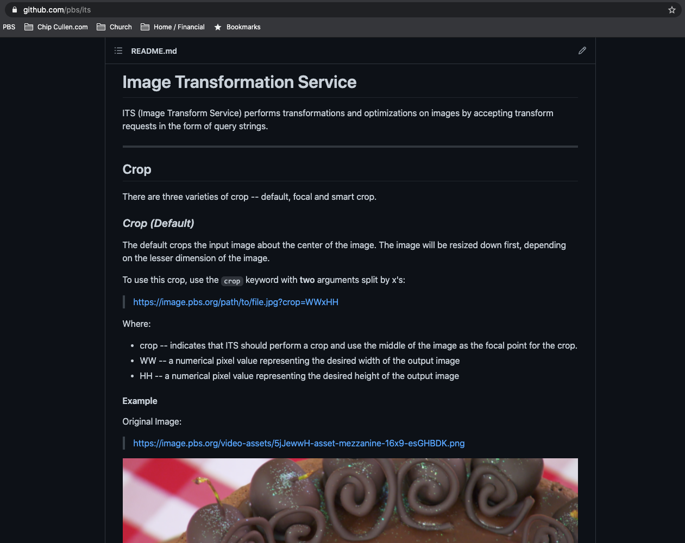

Images in HTML
By Chip Cullen for PBS
Agenda
- Syntax
- Attributes
- Wrapper Elements
- Rendering & CSS
- Accessibility
- Formats
- Lazyloading
- Images at PBS (ITS)
Agenda (if we have time)
- Responsive Images
- srcset
- sizes
- picture & source
- other uses of source
Syntax

Thanks for coming!
Remember these?
they're a thing again
srcset & sizes
aka "responsive hints"
Wrapper Elements
picture (with source)

figure (with figcaption)
Bill Murray is awesome
Rendering & CSS
Images are "replaced elements"
CSS doesn't affect the rendering of the element's contents
(see also: video, iframe, embed)
aspect-ratio
/* internal browser stylesheet - you don't need to add this */
img, input[type="image"], video, embed, iframe, marquee, object, table {
aspect-ratio: attr(width) / attr(height);
}
object-fit
img {
object-fit: cover; // contain, fill, none, scale-down
}
keywords behave a lot like `background-size`
object-position
img {
object-position: left top; // right bottom; 50% 50%;
}
behaves a lot like `background-position`
Accessibility
Consider context
Bill Murray
Longer alternative text
Bill Murray is awesome!
Bill Murray is awesome!
He has been in many movies.
`longdesc` is deprecated
Formats
- JPEG
- PNG
- GIF
- SVG
- WEBP
- AVIF
WEBP
Already 12 years old!
AVIF
New Hotness
Lazyloading
With a library

With Standards!
Images at PBS (ITS)
ITS = Image Transformation Service



If you're not using `resize` you're probably doing it wrong


format auto

format auto

format auto

timecheck?
Responsive Images
srcset
If all you are doing is resolution switching, this should be enough
sizes


Picture & Source
Other uses of source
File formats with fallbacks
Other uses of source
File formats with fallbacks
Other uses of source
Media queries!
prefers-color-scheme:

Other uses of source
Media queries!
prefers-reduced-motion:

Other uses of source
Media queries!
print images: